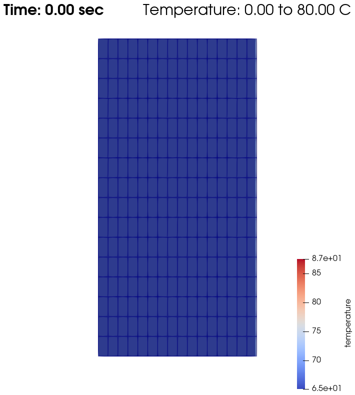
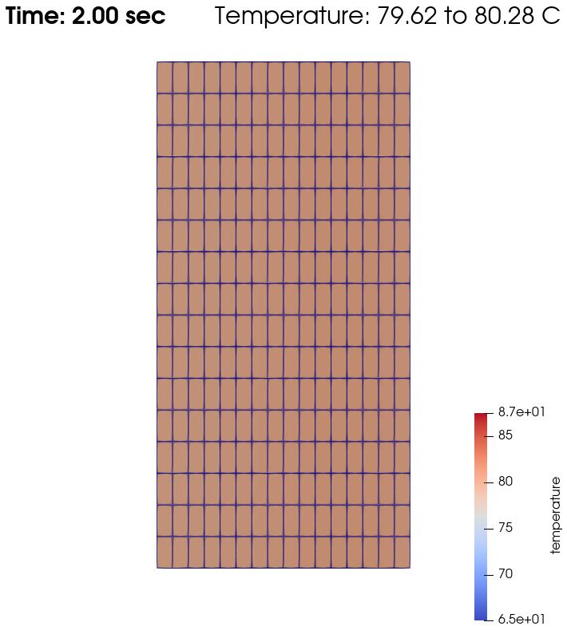
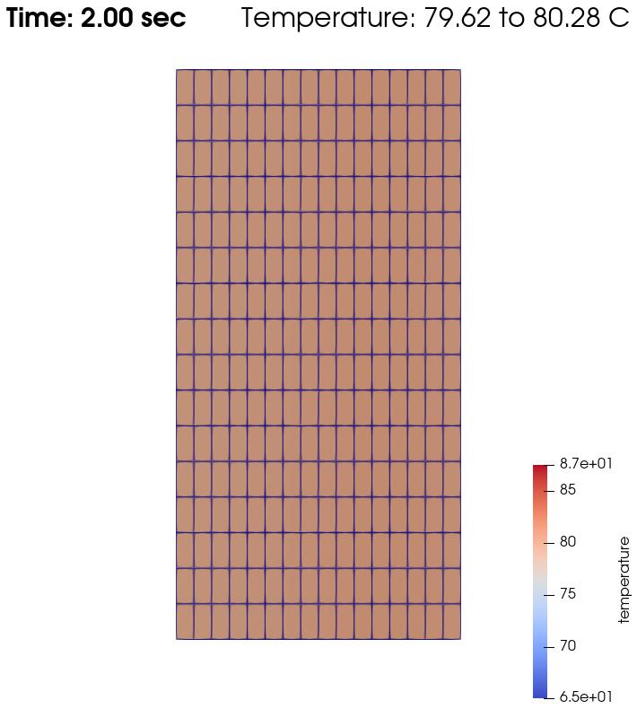
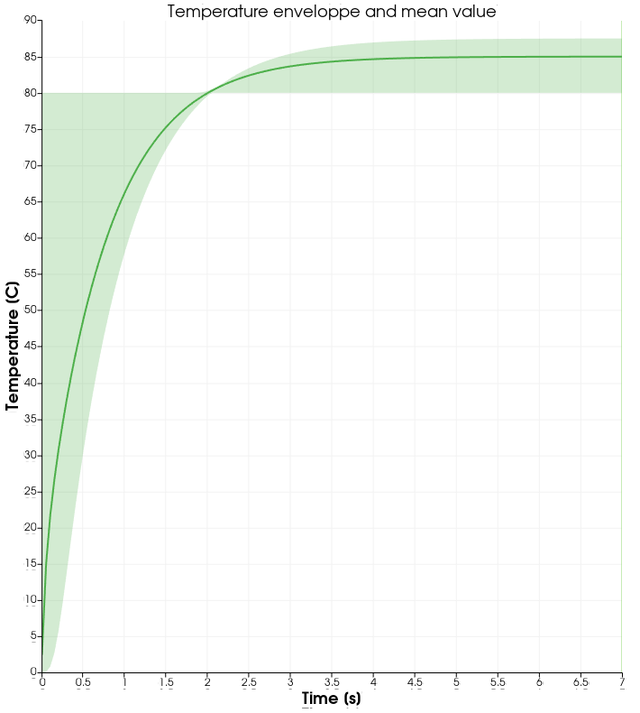
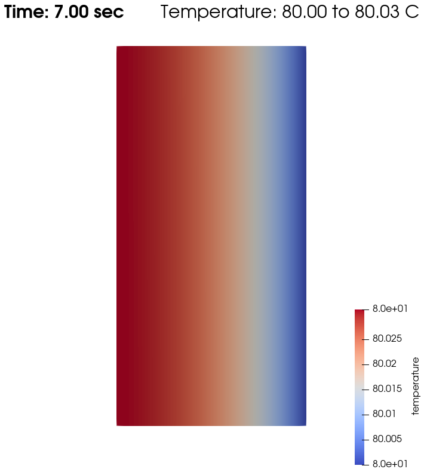
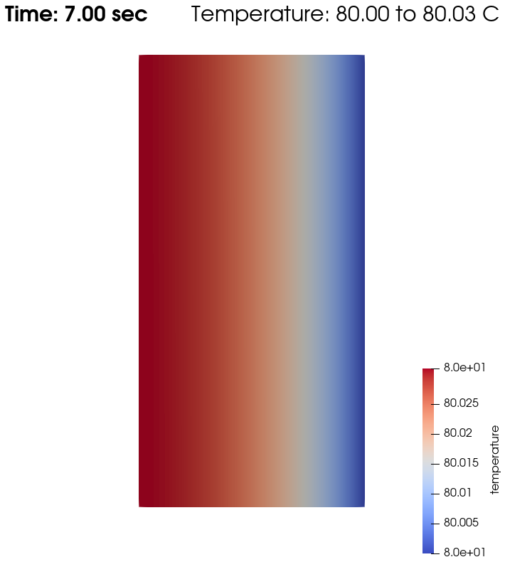
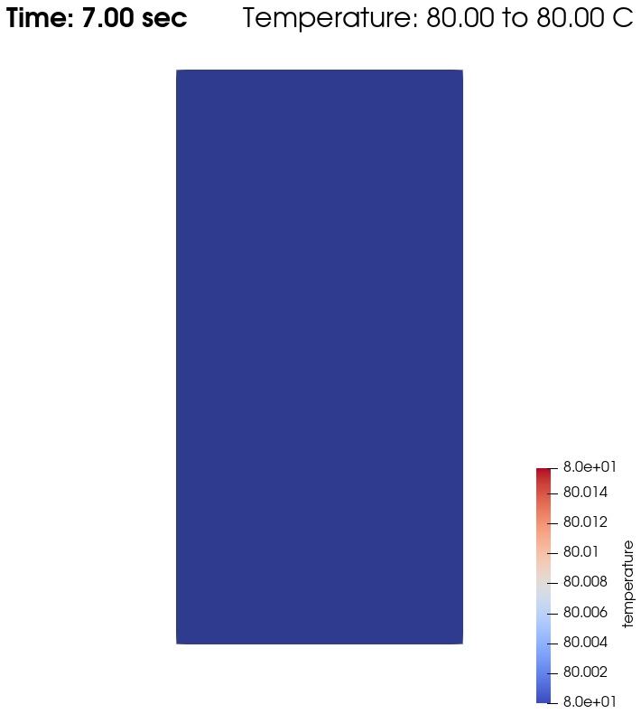
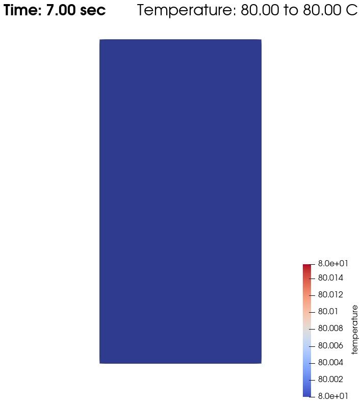

Warming up a Viscous Fluid#
This example introduces how to solve another physics along with the CFD solver.
Features#
Solver:
lethe-fluidTransient problem
Multiphysics
Displays the use of heat transfer physics
Analytical solution
Files Used in This Example#
Parameter file:
examples/multiphysics/warming-up-viscous-fluid.prm
Description of the Case#
A viscous fluid lays between two parallel plates: one fixed and insulated, and the other moving and heated. The velocity profile and the temperature evolution are simulated. The parameter file used is warming-up-viscous-fluid.prm.
The following schematic describes the simulation.

bc = 0 : no slip and thermal insulation boundary condition
bc = 1 : flow in the y-direction (\(v=2\)) and heating at Tw
Important
The whole simulation is carried out in the frame of one-way coupling: the fluid velocity influences the heat generated through viscous dissipation, but the heat transfer does not influence the fluid velocity. Moreover, fluid state changes are not considered.
Parameter File#
Simulation Control#
Time integration is defined by a 2nd order backward differentiation (bdf2), for a 7.0 seconds simulation (time end) with a 0.05 second time step, as stated in the subsection simulation control:
subsection simulation control
set method = bdf2
set time step = 0.05
set time end = 7.0
set output name = warming-up
set output frequency = 1
end
Note
Heat transfer phenomenon occur at a much larger characteristic time than fluid transport phenomenon. To reach a stable state for the system, the end time much be quite big, but the time step can also be increased (in the limit of numerical stability).
FEM#
The order of resolution for the velocity, pressure and temperature are given in the subsection FEM:
subsection FEM
set velocity order = 1
set pressure order = 1
set temperature order = 2
end
Physical Properties#
The fluid’s physical properties are defined in the following subsection, according to the properties of oil.
subsection physical properties
subsection fluid 0
set density = 0.9
set kinematic viscosity = 0.5
set thermal conductivity = 0.12
end
# water = 1 density, 0.01 kinematic viscosity, 0.59 conductivity
# oil = 0.9 density, 0.5 kinematic viscosity, 0.12 conductivity
end
Warning
If no physical properties are defined, default values (of 1.0) are taken for the simulation.
Mesh#
The mesh considered is a very basic rectangle, using the dealii grid type hyper_rectangle, to represent the fluid volume considered between the two plates. Here, the width between the two plates is set to 0.5.
subsection mesh
set type = dealii
set grid type = hyper_rectangle
set grid arguments = 0, 0 : 0.5, 1 : true
set initial refinement = 4
end
Note
As the fluid velocity is not influenced by heat transfer (one-way coupling), the fluid velocity will remain constant for the whole simulation across the domain, and as heat transfer occurs at a larger scale, the mesh can be coarse.
Multiphysics#
The multiphysics subsection enables to turn on (true) and off (false) the physics of interest. Here heat transfer and viscous dissipation must be set (see Bonuses for results without viscous dissipation).
subsection multiphysics
set heat transfer = true
set viscous dissipation = true
end
Analytical Solution#
The analytical solution is defined, according to the fluid and simulation properties:
with \(x\) the axis perpendicular to the plates, \(\rho\) the density, \(\nu\) the kinematic viscosity, \(K\) the thermal conductivity, \(T_\omega\) the heating temperature and \(v\) the velocity of the right plate (bc 1), and \(B\) is the width between the two plates.
subsection analytical solution
set enable = true
set verbosity = verbose
subsection uvwp
set Function expression = 0 ; 0 ; 0
end
subsection temperature
set Function constants = rho=0.9, nu=0.5, K=0.12, Tw=80, v=2, B=0.5
set Function expression = Tw+(((rho*nu)*v*v)/(2*K))*(1-(x/B)*(x/B))
end
end
Boundary Conditions#
The boundary conditions are set for:
the fluid dynamic in
subsection boundary conditions, withnoslipat the left wall (bc 0) and a velocity of2in the y-direction at the right wall (bc 1). The other walls (bc 2andbc 3) are set asoutletwith abeta = 0to represent an open boundary condition.the heat transfer in
subsection boundary conditions heat transfer, with an imposedtemperatureof80at the right wall. All the other walls are set asnoflux.
subsection boundary conditions
set number = 4
subsection bc 0
set id = 0
set type = noslip
end
subsection bc 1
set id = 1
set type = function
subsection u
set Function expression = 0
end
subsection v
set Function expression = 2
end
end
subsection bc 2
set id = 2
set type = outlet
set beta = 0
end
subsection bc 3
set id = 3
set type = outlet
set beta = 0
end
end
subsection boundary conditions heat transfer
set number = 4
subsection bc 0
set id = 0
set type = noflux
end
subsection bc 1
set id = 1
set type = temperature
subsection value
set Function expression = 80
end
end
subsection bc 2
set id = 2
set type = noflux
end
subsection bc 3
set id = 3
set type = noflux
end
end
Note
In lethe, beta = 1 is the default value for the outlet boundary condition. Beta acts as a penalizing factor for fluid entering the domain. Because the fluid will be forced to enter through one of the outlets, beta is set to 0.
Running the Simulation#
The simulation is launched in the same folder as the .prm file, using the lethe-fluid solver. It takes only about 5 seconds with one cpu. Assuming that the lethe-fluid executable is within your path, the simulation can be launched by typing:
Results#
Visualizations#
Convergence with regards to the analytical solution on the temperature:

Domain with temperature:
{kind=link}
 

{kind=link}

Temperature evolution over time:
{kind=link}
Physical Interpretation#
From \(t=0s\) to \(t=2s\), the right plate (\(T=80^\circ\)) heats up the fluid (initially at \(T=0^\circ\)). At \(t=2s\), the temperature is quasi-homogeneous in the fluid, with \(T=80^\circ\). As the fluid continues to be forced to flow at the right wall, viscous dissipation generates more heat, so that the wall with a fixed temperature of \(T=80^\circ\) now cools down the fluid. A steady state between viscous dissipation heating and the fixed temperature cooling is reached at about \(t=4.5s\).
Bonuses#
Results for Water#
For water, physical properties are:
subsection physical properties
subsection fluid 0
set density = 1
set kinematic viscosity = 0.01
set thermal conductivity = 0.59
end
# water = 1 density, 0.01 kinematic viscosity, 0.59 conductivity
# oil = 0.9 density, 0.5 kinematic viscosity, 0.12 conductivity
end
As water has a higher thermal conductivity than oil, the temperature becomes quasi-homogeneous sooner (around \(t=1s\)). And as it is far less viscous, the heat generated by viscous dissipation is not visible on the temperature-over-time plot. However it still exists, as seen when the temperature scale is adapted.


 

{kind=link}
Results without Viscous Dissipation#
The viscous dissipation can be disabled physically, if the two plates remain fixed (v=0 for bc 1), or numerically with set viscous dissipation = false. Both cases give the same results shown below. The fluid considered is still water.
After the fluid has been heated up by the right plate, the temperature is really homogeneous throughout the domain, and both minimum and maximum temperatures stay at \(T_\omega=80^\circ\). Adapting the temperature scale shows that there is no viscous dissipation at all.


 

{kind=link}
Horizontal Domain#
Several adjustments have to be made in the .prm to turn the domain clockwise, so that it becomes horizontal, with the upper wall being the no slip and thermal insulation boundary condition, and the lower wall with the flow in the y-direction (\(v=2\)) and heating at Tw:
in
subsection mesh:set grid arguments = 0, 0 : 1, 0.5 : true- in
subsection analytical solution,subsection temperature: set Function expression = Tw+(((rho*nu)*v*v)/(2*K))*(1-(y/B)*(y/B))
- in
and most importantly, the
idofboundary conditionsshould be adapted to use the bottom and top wall (see the deal.II documentation on hyper_rectangle grid generator for further details):
subsection boundary conditions
set number = 4
subsection bc 0
set id = 2
set type = noslip
end
subsection bc 1
set id = 3
set type = function
subsection u
set Function expression = 0
end
subsection v
set Function expression = 2
end
end
subsection bc 2
set id = 0
set type = outlet
set beta = 0
end
subsection bc 3
set id = 1
set type = outlet
set beta = 0
end
end
subsection boundary conditions heat transfer
set number = 4
subsection bc 0
set id = 2
set type = noflux
end
subsection bc 1
set id = 3
set type = temperature
subsection value
set Function expression = 80
end
end
subsection bc 2
set id = 0
set type = noflux
end
subsection bc 3
set id = 1
set type = noflux
end
end
Possibilities for Extension#
Study the sensitivity to the time step, namely to assess how large the
time stepcan be before stating any difference in the heat transfer solution.Test a different time integration scheme and see if there is any difference in the computational cost and/or the precision with regards to the analytical solution.
See how the resolution order (
velocity order,pressure orderandtemperature order) affects the precision with regards to the analytical solution.